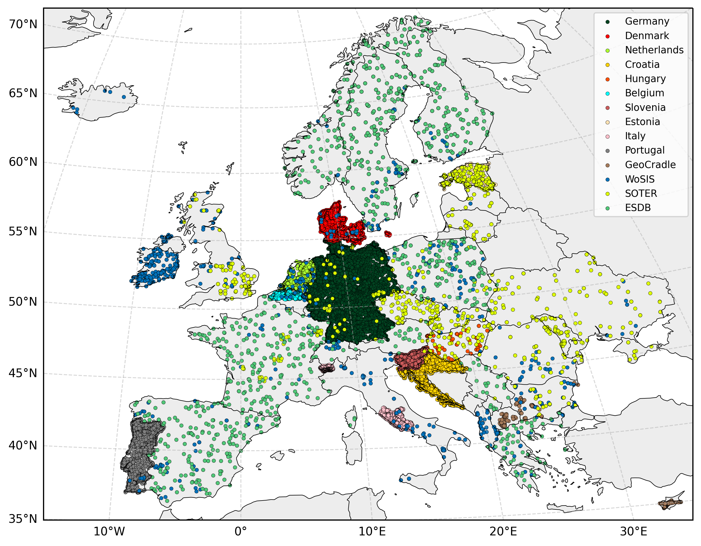

Harmonization of WRB soil types training data
To construct a harmonized pan-European training dataset, legacy soil profile observations were collated from international, national, regional, and publicly available sources provided by project partners and national institutions. All datasets were standardized into a unified schema through a multi-step harmonization workflow that included: (i) reprojection of coordinates into the common European reference system (EPSG:3035), (ii) alignment of soil class information to the IUSS WRB classification, and (iii) normalization of attribute structure and metadata fields. Where multiple WRB labels existed for the same profile, duplicate records were intentionally retained to introduce controlled label noise during model training. Due to data protection agreements signed by OpenGeoHub, some of the source point datasets cannot be redistributed publicly.
To address spatial underrepresentation, pseudo-training samples were generated for regions with sparse observations (notably parts of Spain, France, Poland, the Balkans, and Scandinavia). This was achieved by randomly selecting 1,000 centroids of 1 km raster cells from the ESDB v2 WRB Full Legend layer within data-poor countries. These synthetic samples were included solely to maintain spatial sampling density comparable to major continental and global soil databases and were treated as auxiliary training points rather than true field observations.
Conversely, strongly overrepresented datasets were downsampled to prevent class and spatial imbalance. For example, the Dutch national soil profile database (~200,000 profiles) was reduced to 2,061 observations (~1 %) using doubly balanced sampling to ensure stratification across both geographic space and WRB class distribution.
The complete harmonization workflow, including dataset provenance, transformation rules, class crosswalks, is documented in a harmonization lookup table available as a project spreadsheet (see provided link). This table serves as the authoritative reference for data integration and reproducibility.
harmonization table: https://docs.google.com/spreadsheets/d/1GaNpiH65yiuHusNVkUrKog2FCiVUO6kz_wNdIzHbdfg/edit?usp=sharing
The harmonized datasets available for download are listed in the following table and can be accessed at the link provided in the Soil data download section.
| Name | Source | License | Access link if possible |
|---|---|---|---|
| Germany | Poeplau2020inventory | CC-BY | Open Agrar |
| Belgium | Aardewerk-Vlaanderen-2010 | AARDEWERK | |
| Netherlands | BHR-P | CC-BY | PDOK |
| Slovenia | institute | OpenLandMap | |
| Portugal | RAMOS2017390 | INFOSOLO | |
| GeoCradle | geocradle | GeoCradle | |
| SOTER | batjes2005soter | ISRIC | |
| WoSIS | batjes2017wosis_batjes2024providing | ISRIC | |
| ESDB v2 | panagos2022european | This dataset was synthetically generated from ESDB v2 maps |

Please cite as:
@Article{minarik2025wrb,
AUTHOR = {Mina\v{r}\'{\i}k, R. and Hengl, T. and Simoes, R. and Isik, M.S. and Ho, Y.-F. and Tian, X.},
TITLE = {Soil type (World Reference Base) map of Europe based on Ensemble Machine Learning and multiscale EO data},
JOURNAL = {PeerJ},
VOLUME = {in review},
YEAR = {2024?},
PAGES = {1--32},
DOI = {https://doi.org/10.21203/rs.3.rs-5244083/v1}
}References
Aardewerk-2010 (2011). Aardewerk-vlaanderen-2010. https://www.dov.vlaanderen.be.
Batjes, N. H. (2005). SOTER-based soil parameter estimates for Central and Eastern Europe (ver. 2.0). Technical report, ISRIC.
Batjes, N. H., Ribeiro, E., van Oostrum, A., Leenaars, J., Hengl, T., and de Jesus, J. M. (2017). WoSIS: providing standardised soil profile data for the world. Earth System Science Data, 9(1):1.
GeoCradle (2021). Regional soil spectral library. http://datahub.geocradle.eu/dataset/regional-soil-spectral-library.
Panagos, P., Van Liedekerke, M., Borrelli, P., Koninger, J., Ballabio, C., Orgiazzi, A., Lugato, E., Liakos, L., Hervas, J., Jones, A., et al. (2022). European Soil Data Centre 2.0: Soil data and knowledge in support of the EU policies. European Journal of Soil Science, 73(6):e13315.
PDOK (2020). Bro bodemkundig booronderzoek. https://www.pdok.nl/atom-downloadservices/-/article/bro-bodemkundig-booronderzoek-bhr-p-.
Poeplau, C., Don, A., Flessa, H., Heidkamp, A., Jacobs, A., and Prietz, R. (2020). First German Agricultural Soil Inventory – Core dataset. OpenAgrar, Gottingen.
Ramos, T. B., Horta, A., Gon c¸ alves, M. C., Pires, F. P., Duffy, D., and Martins, J. C. (2017). The infosolo database as a first step towards the development of a soil information system in portugal. Catena, 158:390–412.941
Disclaimer
The production of these data layers are parts of AI4SoilHealth project. The AI4SoilHealth project project has received funding from the European Union’s Horizon Europe research an innovation programme under grant agreement No. 101086179. Views and opinions expressed are however those of the author(s) only and do not necessarily reflect those of the European Union or European Commision. Neither the European Union nor the granting authority can be held responsible for them. The data is provided “as is”. AI4SoilHealth project consortium and its suppliers and licensors hereby disclaim all warranties of any kind, express or implied, including, without limitation, the warranties of merchantability, fitness for a particular purpose and non-infringement. Neither AI4SoilHealth Consortium nor its suppliers and licensors, makes any warranty that the Website will be error free or that access thereto will be continuous or uninterrupted. You understand that you download from, or otherwise obtain content or services through, the Website at your own discretion and risk.